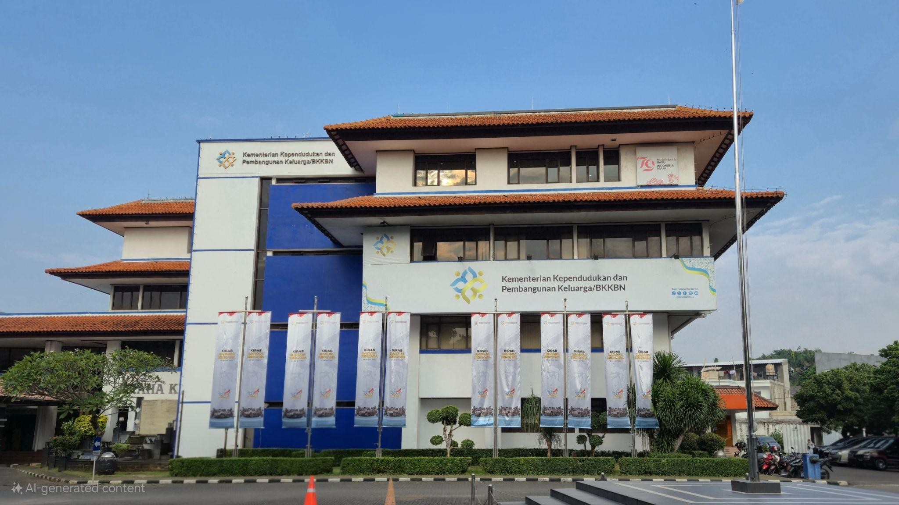

Demi menyelenggarakan dukungan
pengadaan barang dan jasa pemerintah di
Kementrian
Kependudukan dan
Pembangunan Keluarga
(Kemendukbangga)/BKKBN
Menteri/Kepala lembaga membentuk
Unit
Kerja
Pengadaan Barang/Jasa
(UKPBJ)
yang berbentuk struktural pada Biro Umum dan Penegelolaan Barang Milik Negara,
yang mana menjadi pusat keunggulan Pengadaan Barang/Jasa.
